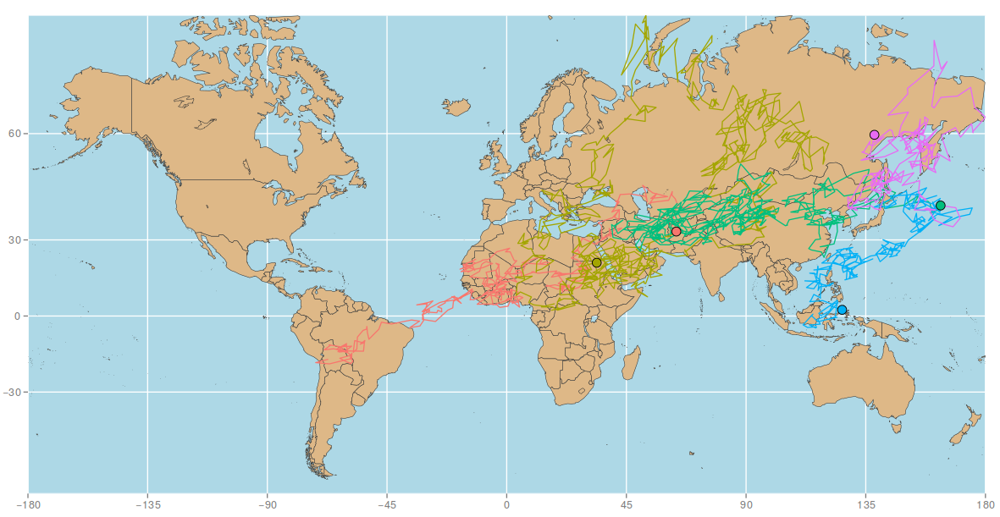
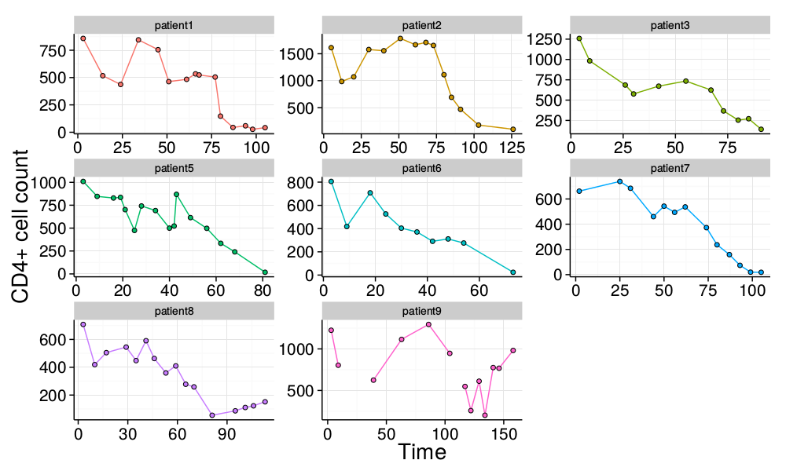
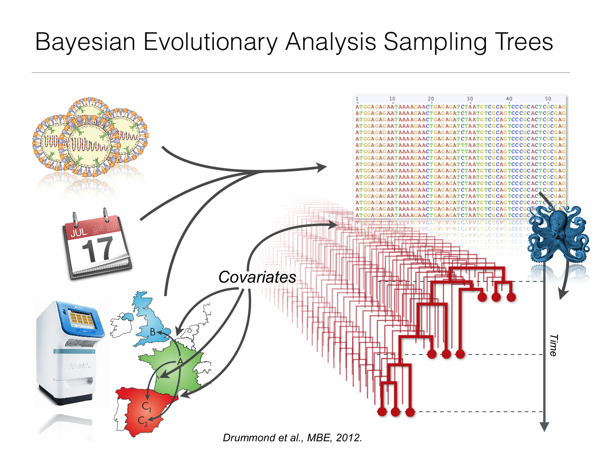
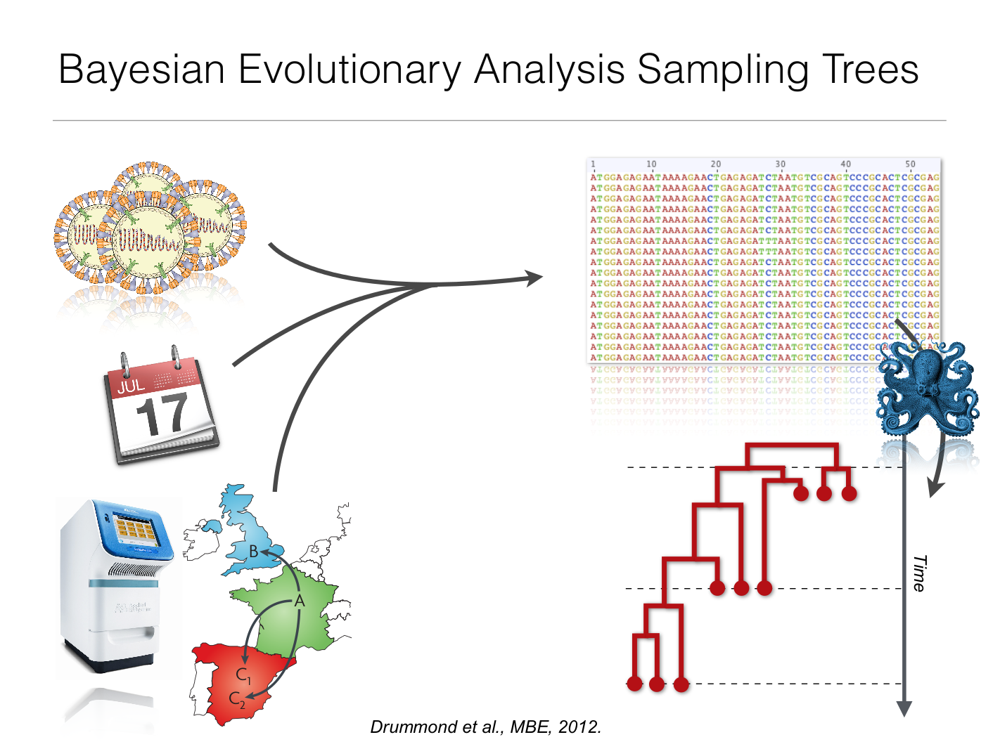

{kind=link}
SpreaD3
User-friendly application to analyze and visualize phylodynamic reconstructions
About me
- Studied Applied Mathematics at Lodz University of Technology
- Postdoctoral researcher at the lab of Philippe Lemey
- Enthusiast of data visualization, parallel and distributed computing
- Other interests: electronics, climbing
- Author of πBUSS and SpreaD3
What do we do?
Tracing how viruses spread throughout the world
Genetic sequence data
+ temporal data
+ other types of data
How do we do it?
Use Bayesian statistics to model the data
For every $n\geq0$, given time-points $0\leq t_{0}\leq t_{1}<\ldots < t_{n}\leq t_{n+1}$ and discrete states $i_{0},i_{1},\ldots,i_{n},i_{n+1}$, it holds that:$$P\left\{ X(t_{n+1})=i_{n+1}\mid X(t_{n})=i_{n},\ldots,X(t_{0})=i_{0}\right\}=$$ $$=P\left\{ X(t_{n+1})=i_{n+1}\mid X(t_{n})=i_{n}\right\}$$
crank up the GPU heat!
crank up the GPU heat!
... and wait
... then wait some more
Get the results
Richly annotated trees
Richly annotated trees
Not very insightfull...
begin trees;
tree tree_1 = [&R] (SimSeq1[&!name="c"]:73.7468,(SimSeq2[&!name="b"]:25.25699,SimSeq3[&!name="a"]:45.25699)[&!name="d"]:18.48981);
end;
1850 cholera outbreak in Soho
John Snow and a map that changed the world
1850 cholera outbreak in Soho
- In XIX century cholera was believed to be spread by miasma in the air.
- Sudden outbreak of cholera in London's Soho was a mystery.
- Snow did something revolutionary for his time: he mapped the cases.

“ It is a capital mistake to theorize before one has data. -- Sherlock Holmes ”
SpreaD3
- Produces interactive visualizations of spatio-temporal diffusion processes
- Sports a user friendly graphical frontend
- Conforms to the layered Grammar of Graphics design patterns
- Renders in-browser, can be easily embedded in webpages, shared on blogs or social media
#1 rule of presentation: never do a live demo.
LIVE DEMO!
Go to: phylogeography.github.io/SpreaD3/
SpreaD3
- Get it: rega.kuleuven.be/cev/ecv/software/SpreaD3
- Fork it:
- User interfaces and parsers @github: github.com/phylogeography/SpreaD3
- Visualisation engine @github: github.com/phylogeography/d3-renderer
- All contributions welcomed!